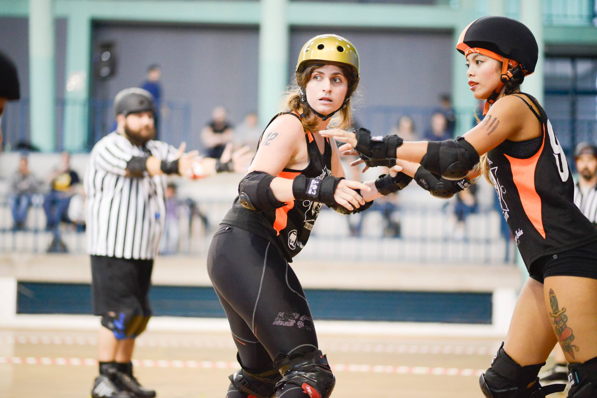

Tenerife Roller Derby bringing the heat to Winter tournaments...
This weekend, Tenerife Roller Derby are hosting one of the last tournaments of the year, as they host Dundee Roller Girls and Malmö's Crime City for a sunny Winter's triple header.
We've already talked to Dundee (here) and Crime City (here), so it's time to catch up with the hosts to talk about their year, and their preparations. Speaking to us was Mercromina Tenerife's Co-Captain and also Co-Captain of the current Team Spain (as Mercedes)!
 Mercromina, centre, blocking against Las Palmas earlier this year (Photo: Javier Velasco)
Tenerife have had a good year this year, with a good performance in the first Spanish National Tournament (second place to Madrid!), and only one loss outside that (to the very strong Paris B). Are you pleased with your team's performance, and what have you been taking from it?
This past year has been a very important year for us. It might sound strange, but we've lost some games and that has made us get out of our comfort zone and realize how hard one has to work to stay on top. We had never lost against a Spanish team before the final against Madrid this year (in which they played an amazing game and totally deserved the win), so we are convinced that a team needs to lose games sometimes to grow stronger. Of course, that kind of thought comes a bit later, in that moment you just want to win everything. So, in general, I am very pleased with our performance last year at the National Championship, especially if you take into account that we hadn't played any game for a complete year.
Tenerife Roller Derby is also a big part of Team Spain 2018, just as it was a big part of the 2014 team. (And you're co-Captain of Team Spain at the moment!) In 2014, that causes a lot of flights to be needed for practice! How does it feel to be back on Team Spain, and how are the team balancing membership of the National Team with Tenerife's own ambitions?
I am honoured to have been co-captaining both teams, Tenerife Roller Derby and Team Spain, this year. It is a big responsibility but also a very challenging and exciting work to do, very rewarding.
They're both two teams that I love and in which I have enjoyed a great number of games. Living so far away makes it always difficult to attend all practices and participate in the tournaments so not everyone is able to do it and some of us have to do a big economic effort, but, at least in my case, I can say that it's worth it.
This year the World Cup will take place in Manchester, so it will be much cheaper than last time, that's great news.
Nevertheless, this tournament will be my last one, since I'm retiring from derby after 6 very intense and engaged years, so I'll follow the adventures of my beloved Team Spain mates from a bit further away and the ones from my home team a bit closer.
Recently, it seems that Tenerife have really been excited by international roller derby, inviting a lot of teams from outside Spain for mini-tournaments. What lead to this decision to have these mini-tournaments, and does it help to be a nice warm sunny country when Europe is in Winter when inviting teams?
We have always been very interested in playing international games. In fact, we've done at home more international than national games (Finland, Scotland, Portugal, Germany, England, France, Sweden are some of the countries that have visited us). This season we are organizing the games in this mini-tournament form so we can offer the teams two games in a row. That's always a good point for visiting teams, having the chance to play two games in one trip.
It's not easy to bring teams to the island, because of the long distances and the cost of the trip, but, of course, being an incredibly beautiful and sunny island is always something that encourages them to come. Lots of teams use the chance to stay a few more days here and have some holidays together. I can't imagine a better team bonding acitivity.
Your next tournament features two teams from much further North in Europe (everyone is further north than Tenerife, but …!) - Dundee and Malmö - but this isn't the first time you've played Scottish, or Swedish, teams. How are you preparing for the tournament - and do you have any advice for the visiting teams?
We are training really hard for this and the other tournaments to come. We've had a lot of important members of the team leaving us recently but we are also lucky enough to always have new talented and motivated skaters with us, so we are currently focusing on maintaining the level that we've achieved in the last years and doing a good transition to our new skaters squad.
With both National Championships, and these tournaments, Tenerife Roller Derby must have even more exciting things lined up for next year? What can you tell us of the future plans?
Our future plans for this season include some more tournaments at home, but also travelling to play tournaments abroad. That is a really exciting thing for us, since we haven't been able to travel to play a tournament yet, except for the National Championships last summer. So we're really looking forward to it. Our plan is to keep growing and try to be the best team in Spain, although we're very pleased that derby is growing in our country and more and more teams are raising their level, we've always supported our other national teams.
Tenerife's Torneo Triangular Roller Derby is on this 17th December, starting at 2pm , at the Pabellón de deportes Pancho Camurria. Event page is here: https://www.facebook.com/events/1790180551249253/